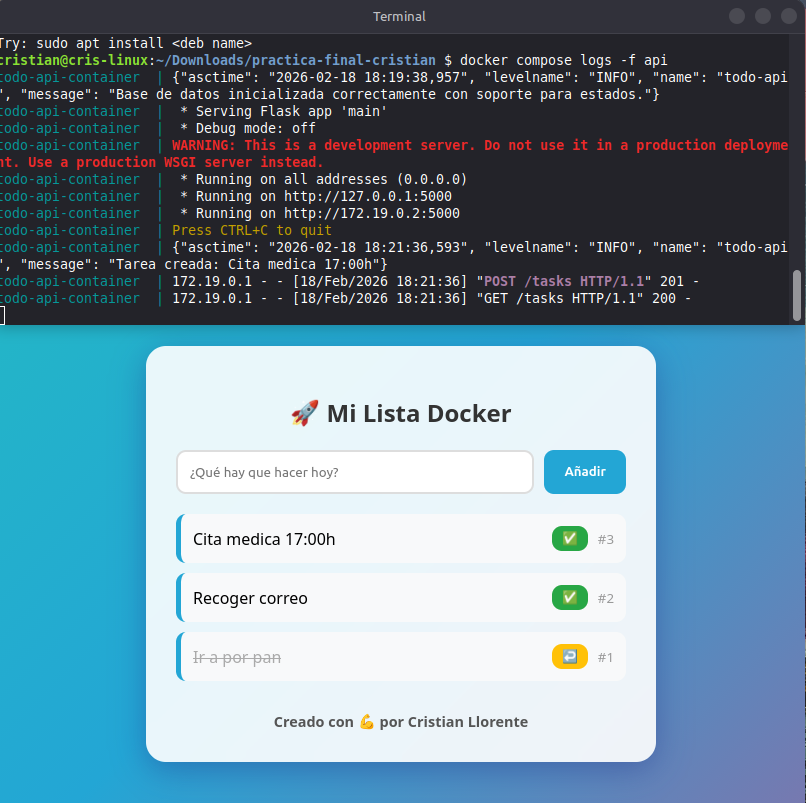
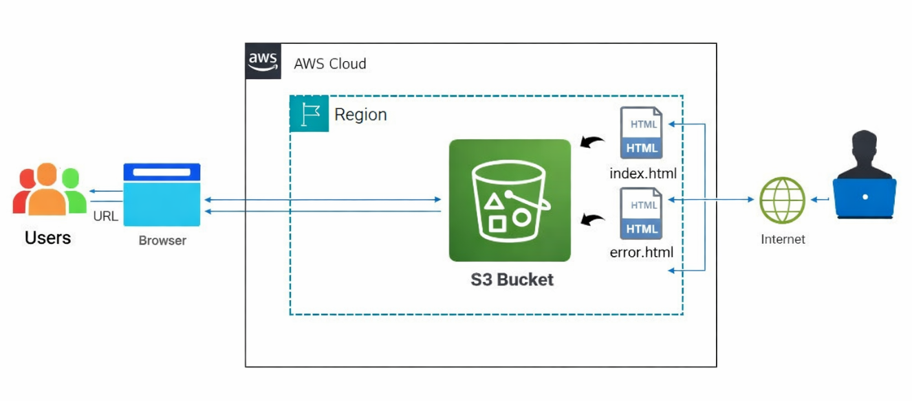
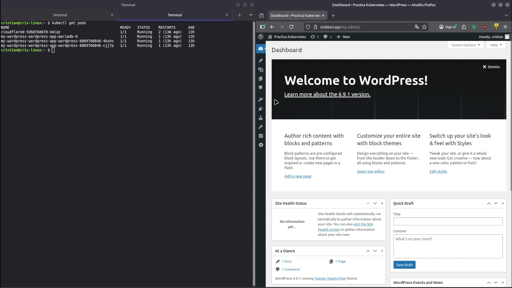

~/home/cristian $ whoami
Apasionado por la automatización, la infraestructura como código y las prácticas CI/CD. Construyendo puentes entre desarrollo y operaciones, un pipeline a la vez.
01. sobre_mi.sh
Con una extensa trayectoria profesional como técnico autónomo, he forjado una sólida capacidad para diagnosticar y resolver problemas técnicos complejos bajo altos estándares de fiabilidad.
Mi carrera se ha centrado en la optimización de entornos técnicos, una experiencia que ahora canalizo hacia el ecosistema DevOps e Infraestructura Cloud para transformar procesos operativos en flujos automatizados y eficientes.
Me especializo en la orquestación de contenedores con Docker y Kubernetes, y en el despliegue de infraestructura como código utilizando Terraform.
Aporto la madurez de una larga carrera en el sector técnico, combinada con un dominio actualizado de las prácticas de CI/CD y la cultura DevOps, garantizando soluciones estables, escalables y seguras.
+10
Tecnologías
5+
Proyectos
∞
Curiosidad
02. proyectos.yml
Una selección de proyectos donde aplico conceptos de DevOps, infraestructura y automatización.

Automatización de build, test y deploy de una aplicación web usando Docker.

Despliegue de un website estático en un bucket S3 de AWS usando Terraform.

Despliegue de chart de Helm con Minkube, Ingress y monitorización con Prometheus.
03. stack.json
Herramientas y tecnologías con las que trabajo o estoy aprendiendo activamente.
Linux
Ubuntu / Debian
Bash
Shell Scripting
Python
Automatización
Git
GitHub / GitLab
GitHub Actions
Pipelines CI/CD
Jenkins
Automatización
Docker
Containers
Kubernetes
K8s / Kind
Helm
Package Manager K8s
AWS
EC2 / S3 / VPC
Terraform
IaC
Ansible
Configuration Mgmt
Prometheus
Métricas
Grafana
Dashboards
04. contacto.sh
Estoy abierto a oportunidades, colaboraciones o simplemente a conectar con otros profesionales del sector.
Descargar mi CV